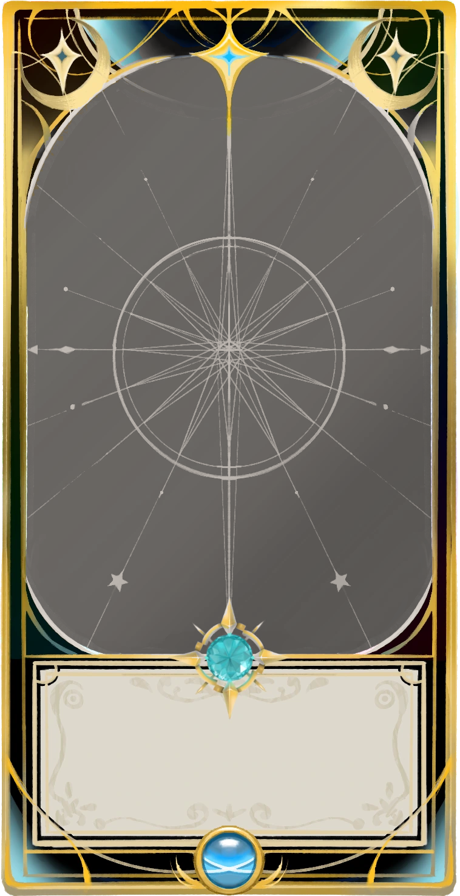
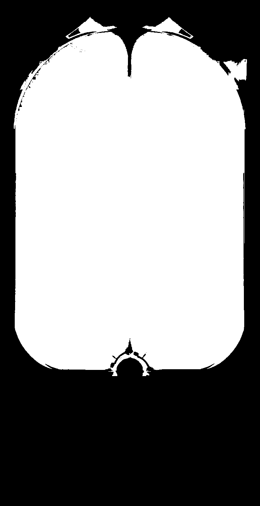
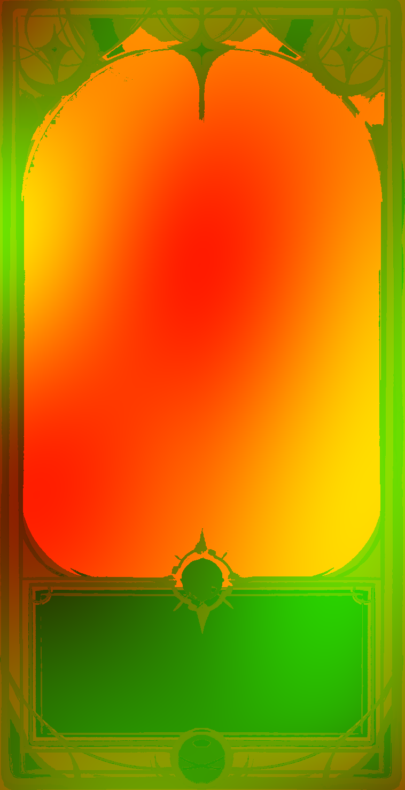

Material inspection · tarot card front · for approval
The colourful gradient in the V2 artwork's central panel was a baked simulation of foil. Here the panel is restored to its neutral grey base (a derived texture — the original artwork is untouched), and the foil is rendered as a surface treatment: physically based thin-film iridescence plus a diffraction-style spectrum that appears only where the card actually reflects light, and moves with viewing angle.



Drag the card or use the sliders. Rotation is limited to the front, as on the site — no card back is shown.
Renders use the same engine, lights and camera as the homepage ("Home spotlight"). Thin film: MeshPhysicalMaterial iridescence driven by the foil map (IOR 1.55, 180–620 nm). Spectrum: a custom diffraction term that disperses the card's own specular light along a diagonal grating fixed to the card. Gold keeps its metallic response; the cream text panel stays almost matte.